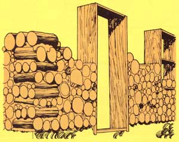

Jack Henstridge (author of the accompanying feature article) isn't the only back-to-the-lander who's rediscovered "stackwood wall" construction lately. Away out in Nelson, British Columbia, homesteaders Dan and Karen Stewart are erecting a two-story stackwood dwelling (see photos) using 48 cords of "waste" wood.
Like the Henstridge home, the Stewarts' new abode-when finished-will have about 3,000 square feet of livable floor space. Unlike the Henstridge family's house, however, Dan's and Karen's dwelling will have square corners. As you can see from the illustration at left, the Stewarts have (apparently) solved the problem of how to build square corners by stacking groups of cordwood chunks alternately at right angles wherever two walls meet.
"We call it `the magic house'," Karen says, adding: "It's got to be magic when you can stack cordwood in mortar and end up with a home to live in!"- Jenny Pringle.
|
 |
|
|